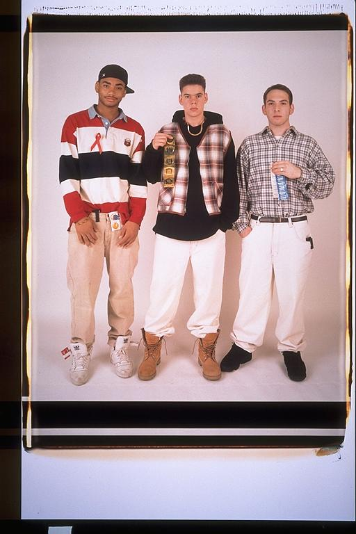

Pals: Boys Who Grew Up Together
elsadorfman.com/pals
Aldo: The condom shot. No, actually this picture was for an AIDS awareness photo, if I'm not mistaken. But I think for us, it was the condom shot. To be a teenager, and have your picture taken with condoms, a kinda strange but cool feeling. Like, "look at us we're young, but we must be cool, cause we're holding condoms."

elsad@comcast.net